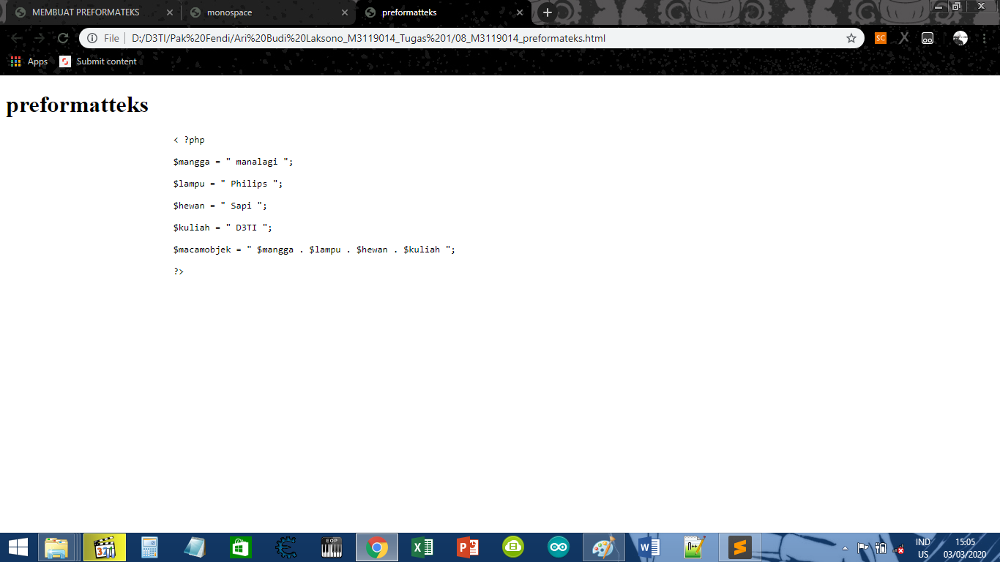

KODE PROGRAM
< ?php
$mangga = " manalagi ";
$lampu = " Philips ";
$hewan = " Sapi ";
$kuliah = " D3TI ";
$macamobjek = " $mangga . $lampu . $hewan . $kuliah ";
?>
SCREENSHOT 
KESIMPULAN
Dari koding di atas, Dapat disimpulkan bahwa preformateks hampir sama dengan Monospaced Font.
Hanya saja bedanya Preformateks lebih memudahkan jika terdiri dari baris yang banyak.
Kembali Ke Halaman Utama